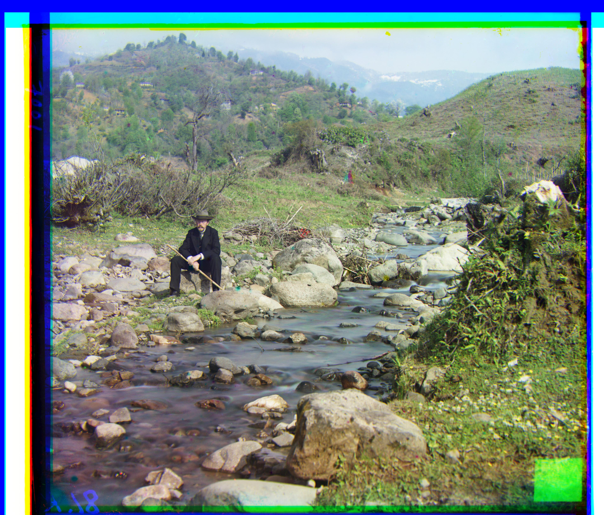
Between 1909 and 1915, Sergey Mikhaylovich Prokudin-Gorsky
travelled across the Russian Empire and documented a variety of things through photography. Interestingly, despite this being
well before the time of widespread color photography, his records give us a colorful insight into the Russian Empire. This is
because he was ingenious enough to capture three exposures of every photo, using a red, green, and blue filter.
Now, his photographs have been digitized by the Library of Congress. Each image is a vertical stack of the individual images
captured by the blue, green, and red filters.
Using image processing techniques, one can convert the stacked images shown above into colorful photographs showcasing the beauty of the Russian Empire in the early 20th century.
In this section, we focus on single-scale alignment techniques used to process the images. The methods described here are suited for scenarios where image details are uniform across scales.
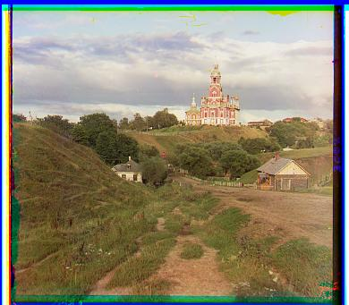
cathedral.jpg
Δ green: (5, 2)
Δ red: (12, 3)
runtime: 11.06s
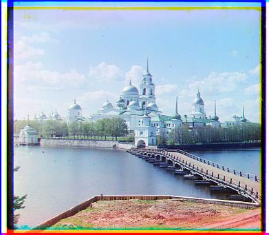
monastery.jpg
Δ green: (-3, 2)
Δ red: (3, 2)
runtime: 11.19s
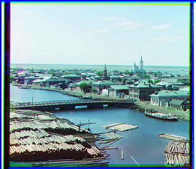
tobolsk.jpg
Δ green: (3, 3)
Δ red: (6, 3)
runtime: 11.09s
This section delves into multiscale alignment, where the images undergo alignment at different scales to capture both small and large-scale details. This method allows for more refined and accurate image processing.
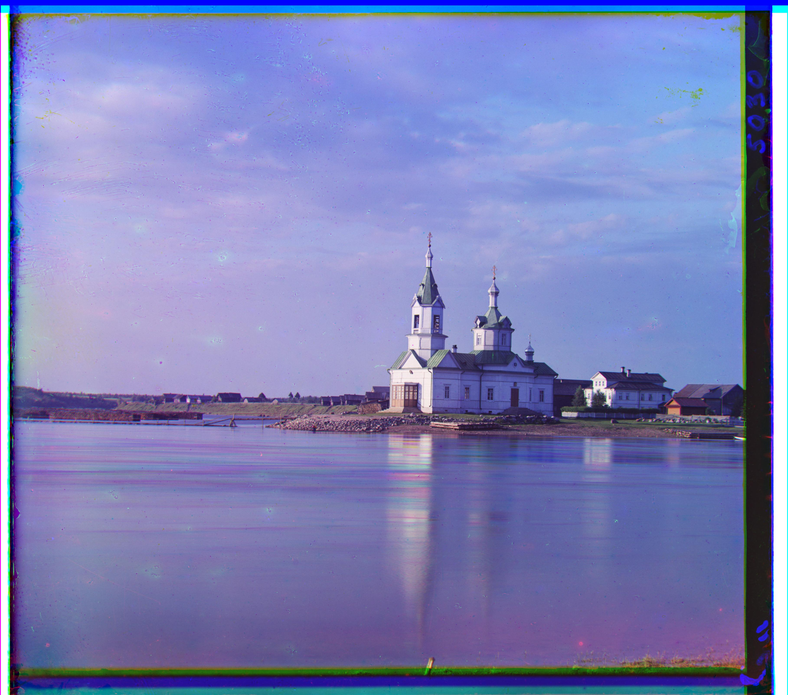
church.tif
Δ green: (25, 4)
Δ red: (59, -4)
runtime: 107.29s
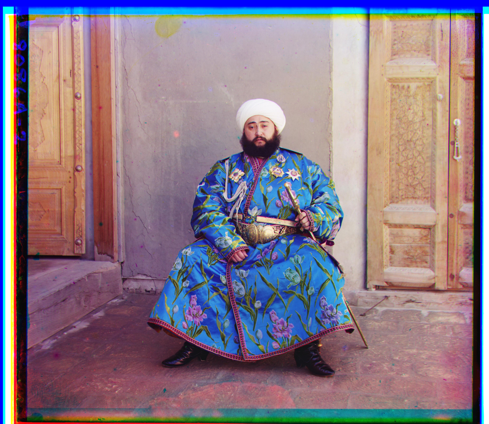
emir.tif
Δ green: (50, 22)
Δ red: (105, 40)
runtime: 110.21s
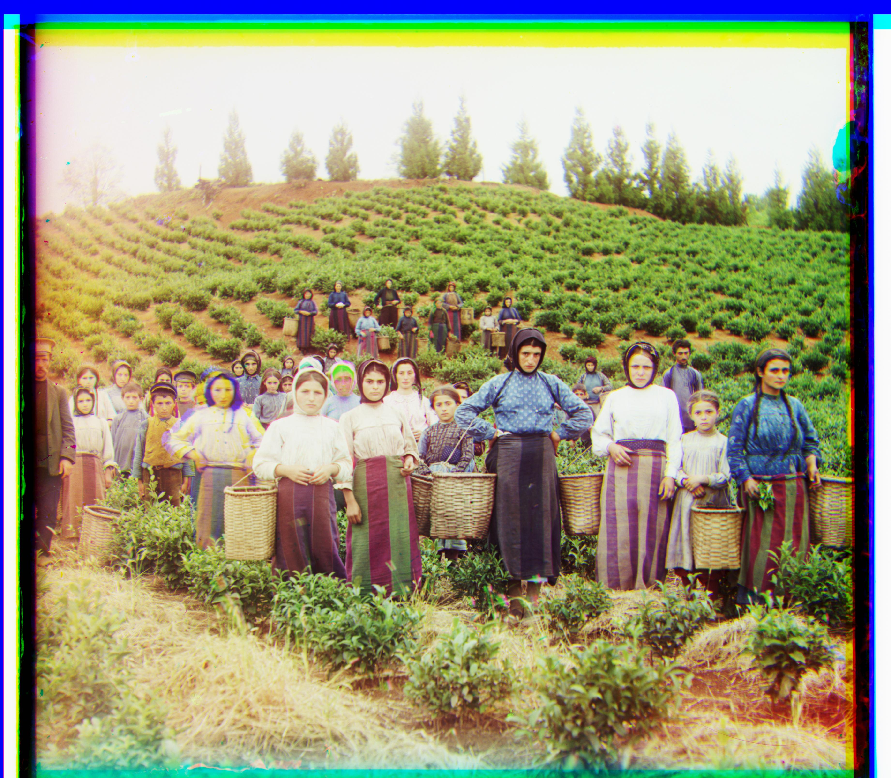
harvesters.tif
Δ green: (59, 15)
Δ red: (122, 12)
runtime: 118.93s
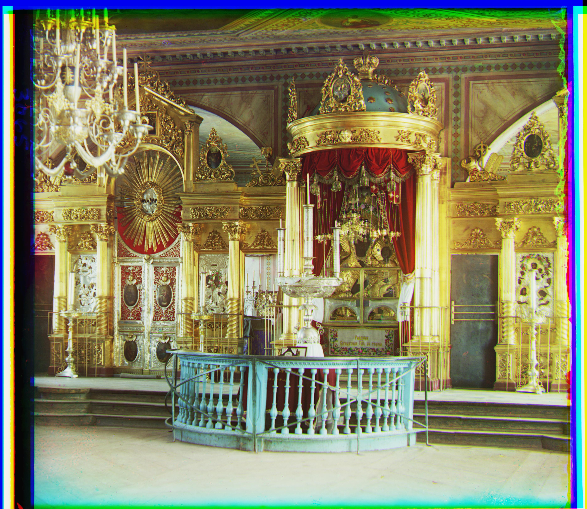
icon.tif
Δ green: (39, 16)
Δ red: (89, 23)
runtime: 124.10s
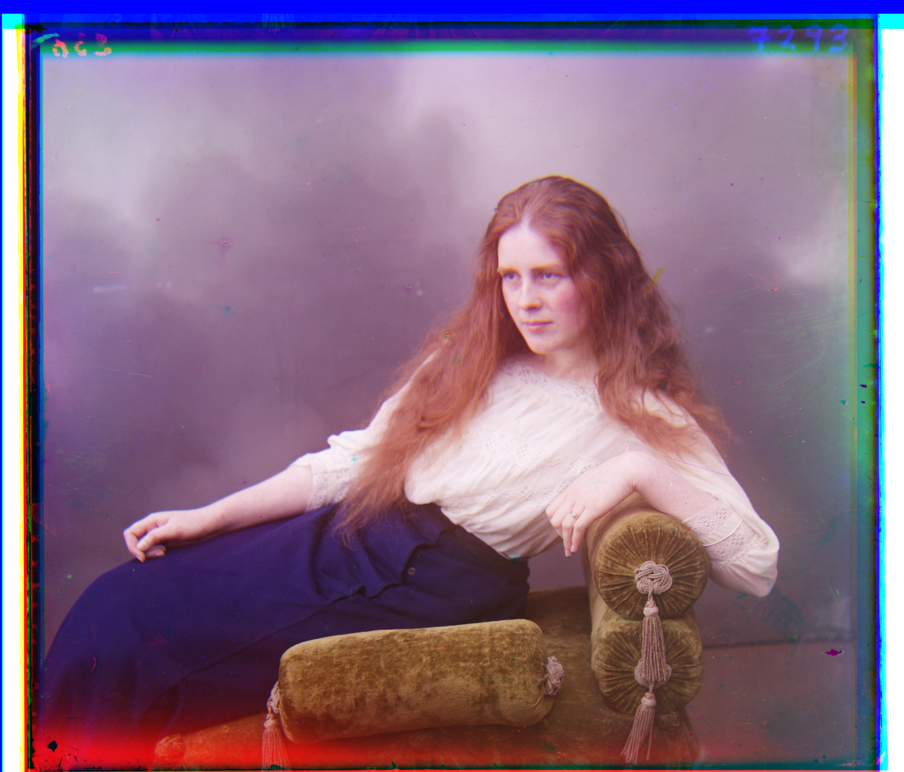
lady.tif
Δ green: (57, 8)
Δ red: (120, 12)
runtime: 133.33s
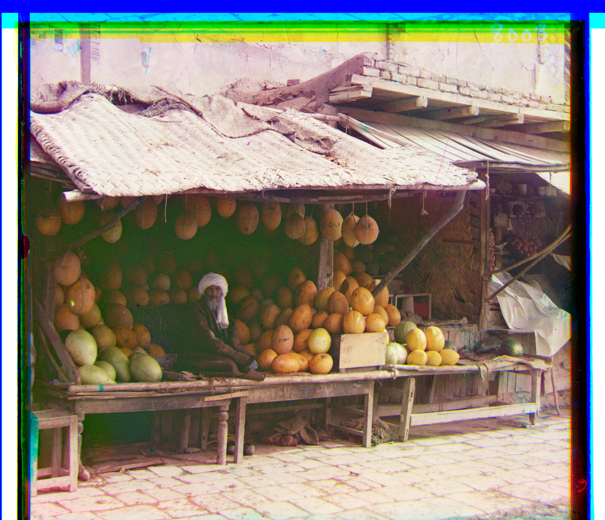
melons.tif
Δ green: (80, 10)
Δ red: (177, 13)
runtime: 112.90s
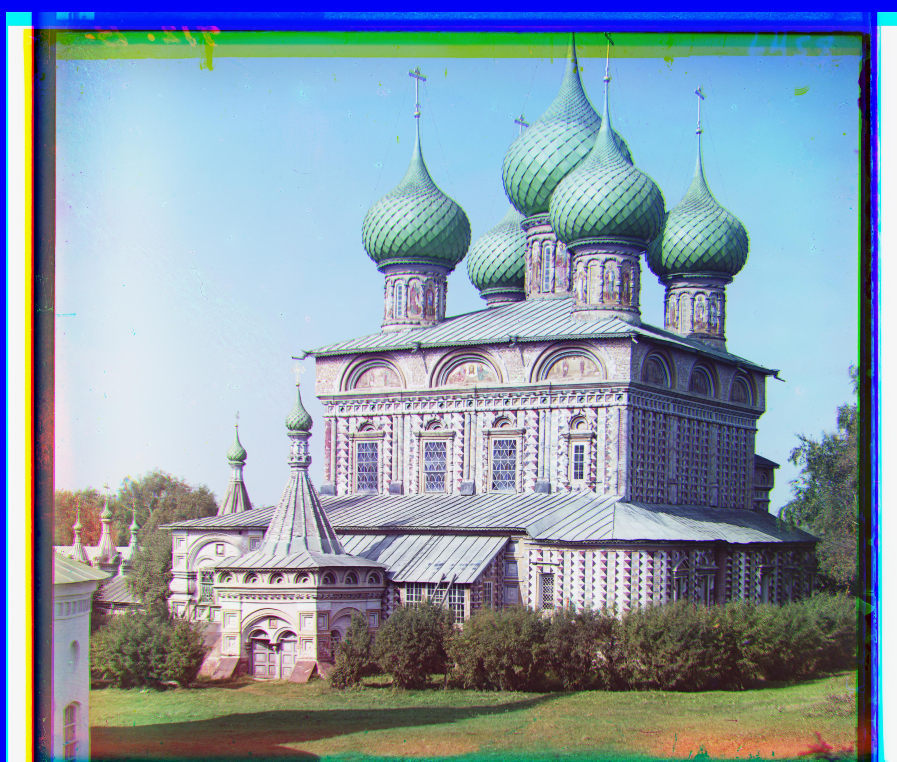
onion_church.tif
Δ green: (52, 25)
Δ red: (108, 35)
runtime: 123.56s
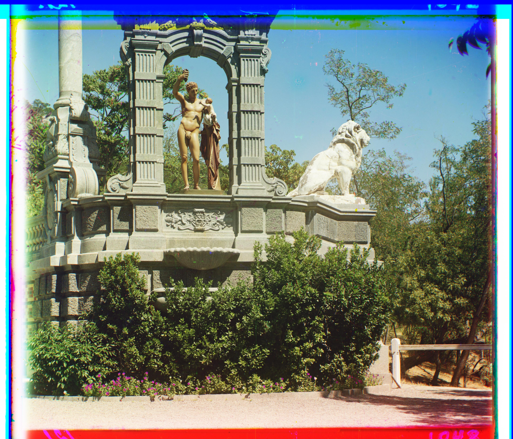
sculpture.tif
Δ green: (33, -11)
Δ red: (140, -27)
runtime: 140.27s
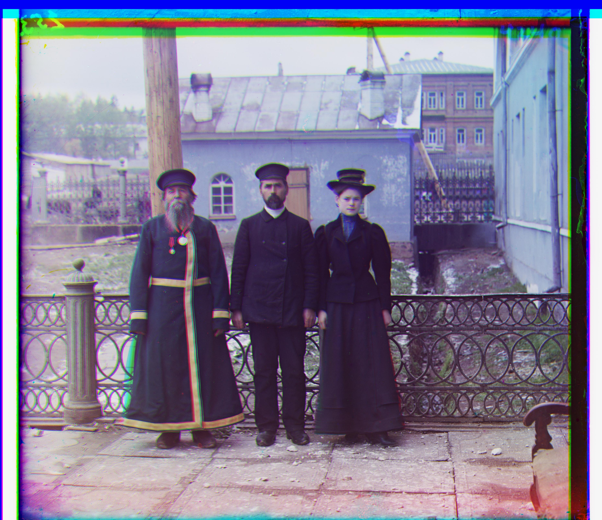
three_generations.tif
Δ green: (56, 17)
Δ red: (113, 10)
runtime: 111.33s
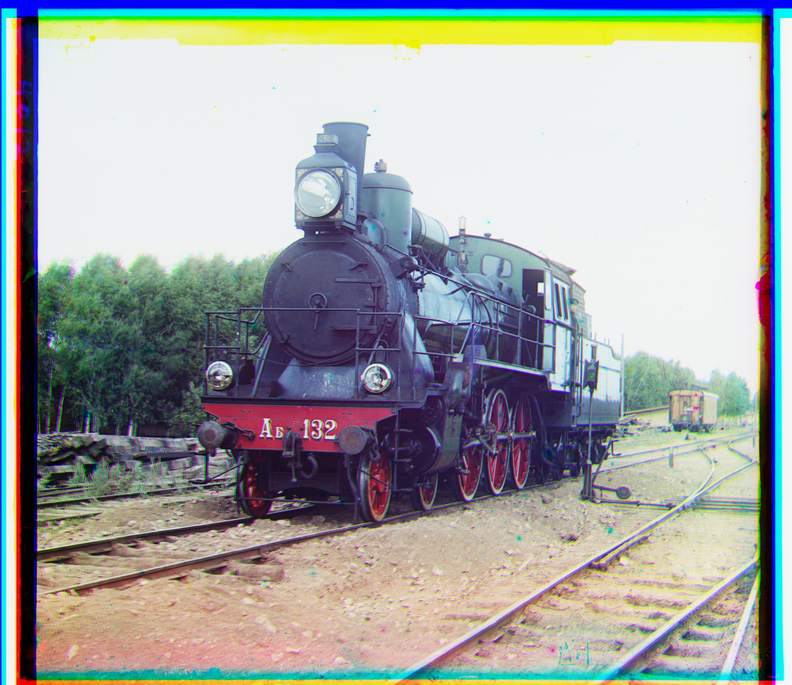
train.tif
Δ green: (40, 7)
Δ red: (85, 29)
runtime: 134.13s
Here, we discuss additional features and enhancements added to the project, such as advanced image filters, color correction, and texture mapping. These "bells and whistles" help improve the final image quality.
...
| filename | method | green dx | green dy | red dx | red dy | time |
|---|---|---|---|---|---|---|
| cathedral.jpg | single-scale | 5 | 2 | 12 | 3 | 11.06 |
| monastery.jpg | single-scale | -3 | 2 | 3 | 2 | 11.19 |
| tobolsk.jpg | single-scale | 3 | 3 | 6 | 3 | 11.09 |
| church.tif | multiscale | 25 | 4 | 59 | -4 | 107.29 |
| emir.tif | multiscale | 50 | 22 | 105 | 40 | 110.21 |
| harvesters.tif | multiscale | 59 | 15 | 122 | 12 | 118.93 |
| icon.tif | multiscale | 39 | 16 | 89 | 23 | 124.10 |
| lady.tif | multiscale | 57 | 8 | 120 | 12 | 133.33 |
| melons.tif | multiscale | 80 | 10 | 177 | 13 | 112.90 |
| onion_church.tif | multiscale | 52 | 25 | 108 | 35 | 123.56 |
| sculpture.tif | multiscale | 33 | -11 | 140 | -27 | 140.27 |
| self_portrait.tif | multiscale | 78 | 28 | 175 | 37 | 159.43 |
| three_generations.tif | multiscale | 56 | 17 | 113 | 10 | 111.33 |
| train.tif | multiscale | 40 | 7 | 85 | 29 | 134.13 |